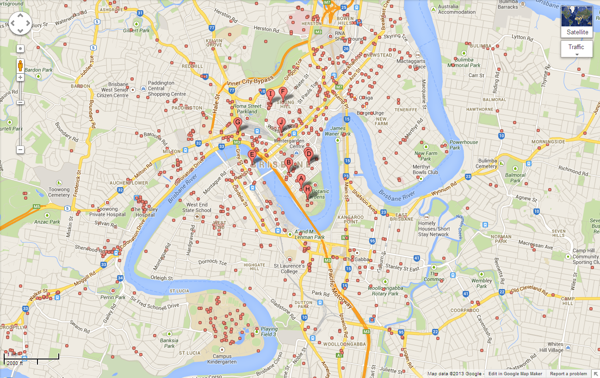

Example large application
Add sites
Mark sites on the map by enabling the Add site tool and clicking on the map or by entering the geographic coordinates. Site specific information will be returned for each of the sites.

| Regional Ecosystem | Vegetation Group | % |
|---|---|---|
| 11.7.6 | Eucalypt Forest | 60 |
| 11.5.21 | Eucalypt Woodland | 40 |
| Year range | Average yearly change in carbon dioxide |
|---|---|
| 0-10 | 4.514 |
| 10-20 | 7.757 |
| 20-30 | 4.855 |
| 30-40 | 3.106 |
| 40-50 | 2.128 |
| 50-100 | 0.99 |